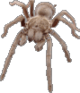

This is my personal website. We study, investigate and scrutinise scientific papers and broadcasting news to check what current ideas seem to be valid. Historical research is a very important tool that is undervalued and misunderstood currently. We do not depend on politics, our only policy is didatics. Philosophy is the mother of all sciences.
News
Moved older items from Quotes and Links to dedicated pages so to avoid a landing page that is too long..
RSS Feeds are finally stable.
If you find problems, remove and add my feeds in you reader again. If you want and have got time, please send feedback (suggestions and/or opinions) about the RSS Feed to me.
Improved the navigation system. Also changed the navigation system of blog pages, which use W3.CSS framework.. Now our website has got an RSS Feed!
I will run the spellcheck on my website pages sometimes, however please take no notice on spelling mistakes or let me know by e-mail, I will be pleased to fix that. I don't have a means to make my bad grammar into good grammar other than re-reading the text myself sometimes.
You can check a silly page I'm making. I am having fun with HTML and CSS and hopefully learning some more of that. But also because web pages made by real HTML amateurs are sort of special..
The Fool Environmentalist
What news articles are really dependable? It seems
there is so much alarmism out in the media.
May that be science has become banal?
We shall take our time to scrutinise some papers and point out mistakes and remark the proper in a dedicated page.
Quotes
Do you want my advice? Stop looking for advice. Go out and do something. And stick to it. Remember: everything is a risk. Now go take a risk.
- --Myron Steves
Power improves no one. Love, gentleness, compassion, kindness - have no use for power. They flower from the heart. The parts hungry for power are greed, hostility and every other destructive aspect of human nature. Power corrupts. Without exception.
- --John McAfee
Tolerance is not a moral absolute; it is a peace treaty. [...] [Tolerance] is an agreement to live in peace, not an agreement to be peaceful no matter the conduct of others.
- --Tolerance is not a moral precept
Ask for forgiveness, not permission
- --Hixie's Natural Log
Links
| Tiago Jácomo | | | Movimento de Solidariedade Ibero-americana | | | |
|---|---|---|---|---|
| Graham Hancock (interesting journalist) | | | Pop-Up Book About Bugs | | | Burning Bird |
| The Strong and Free Podcast | | | Phil Ringnalda's blog (very very good) | | | Erowid Chambers |
Latest Blog Posts
- #42 - Podcast #7 - Season Finale - Freedom, Focus and Mushrooms
- #41 - Overview on My Blogging Systems
- #40 - Ksh2020 Flamewars
- #39 - Not Quite Done Yet
- #38 - Going Away
- #37 - Firefox on Mobile (Android)
- #36 - Firefox on NVIDIA Graphics Card
- #35 - Removing Google Analytics
- #34 - Bitcoin Graph Watch
- #33 - Podcast #6 - More Tor Configs for Bitcoin Node and SSH